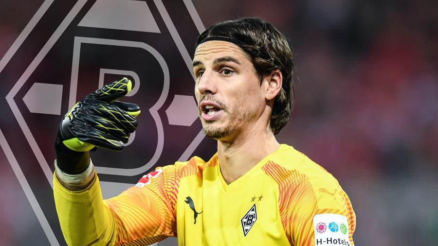

Darf ich vorstellen...
...Yann Sommer
Lieblingssong
- «I Am a River» von den Foo Fighters.
Lieblingsrezept
- Fusilli mit Poulet und Basilikum
Steckbrief
Geburtzdatum: 17. Dezember 1988
Grösse: 1,83m
Position: Tor
Nationalität: Schweiz
Wohnort: Düsseldorf (Deutschland)
Nationalmanschaft
Yann sommer hat bereits 66 Länderspiele absolviert.
Verein
Yann Sommer spielt seit 2014/15 bei Borussia Mönchengladbach.
